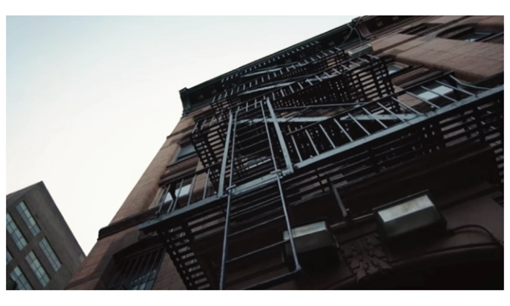
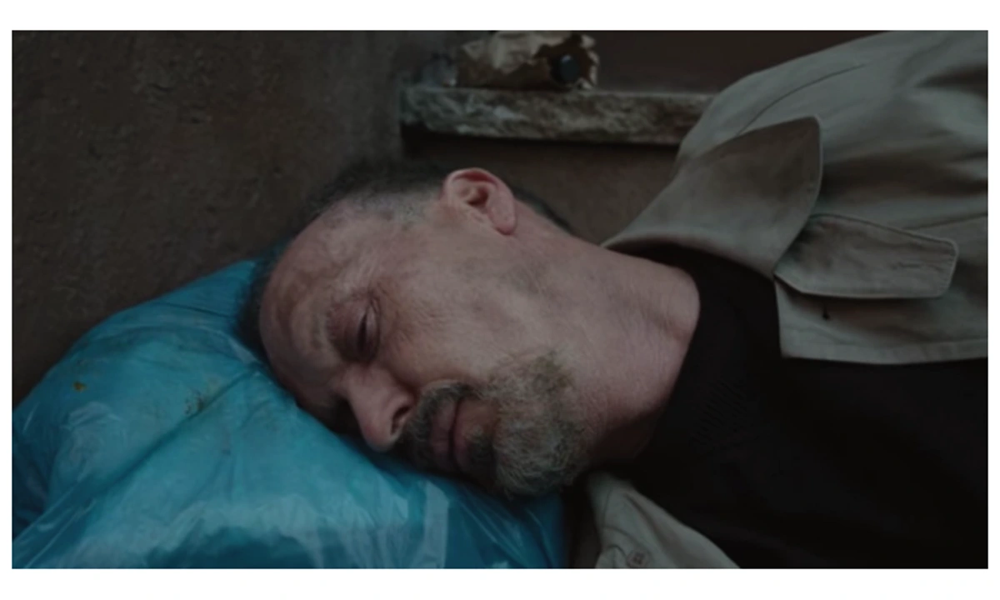
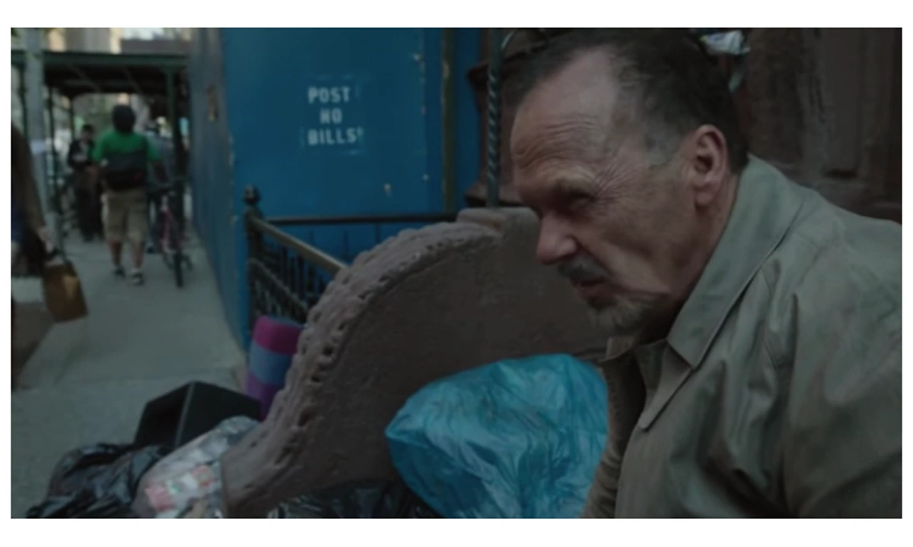
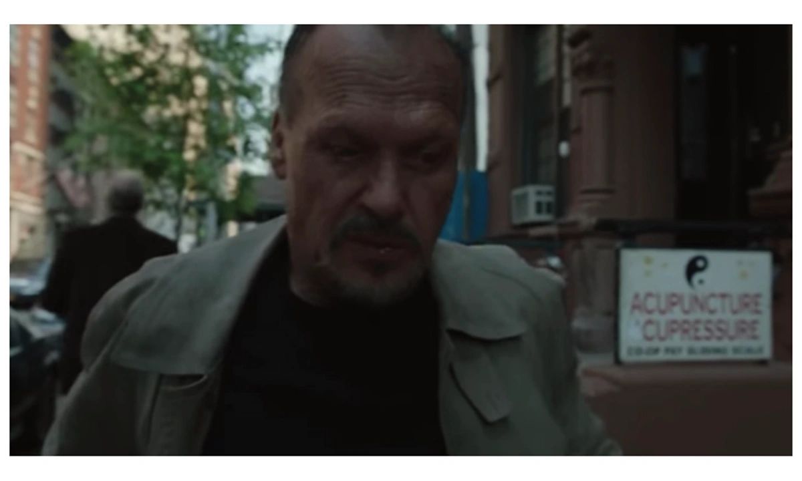
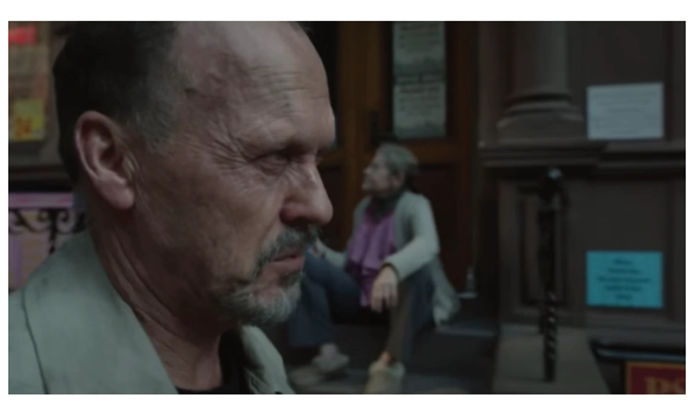
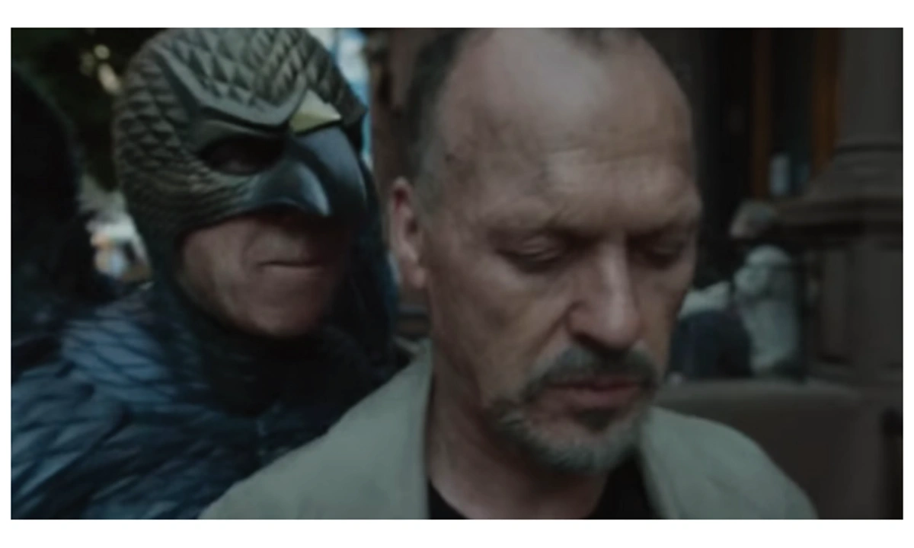
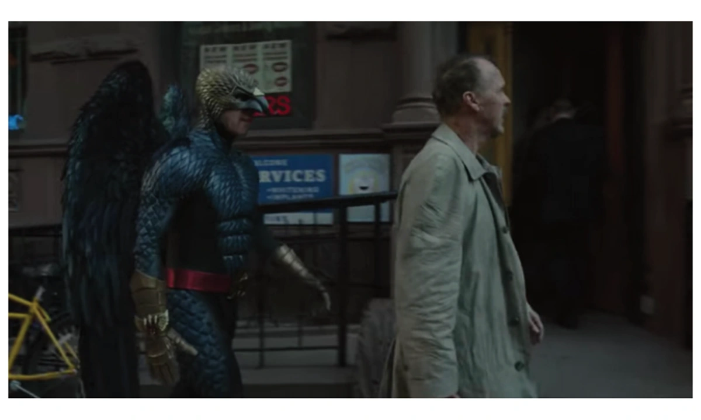
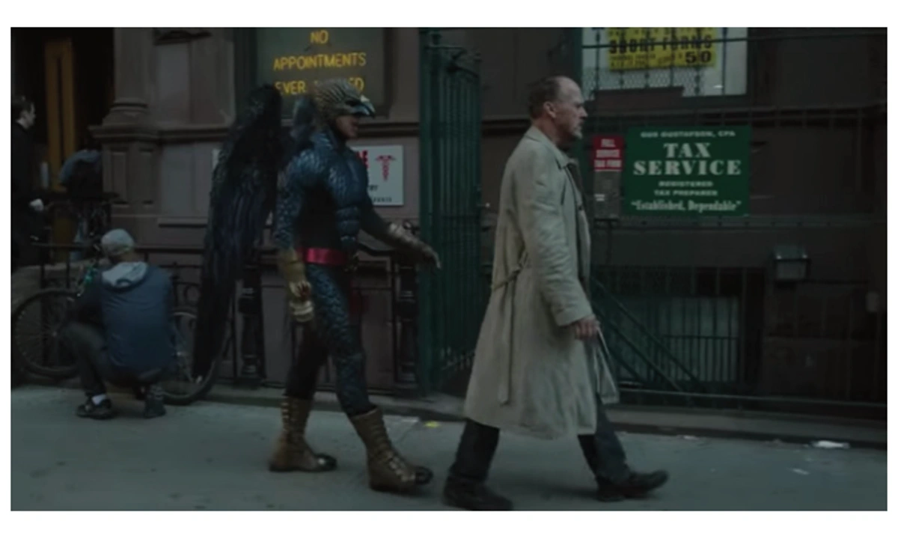
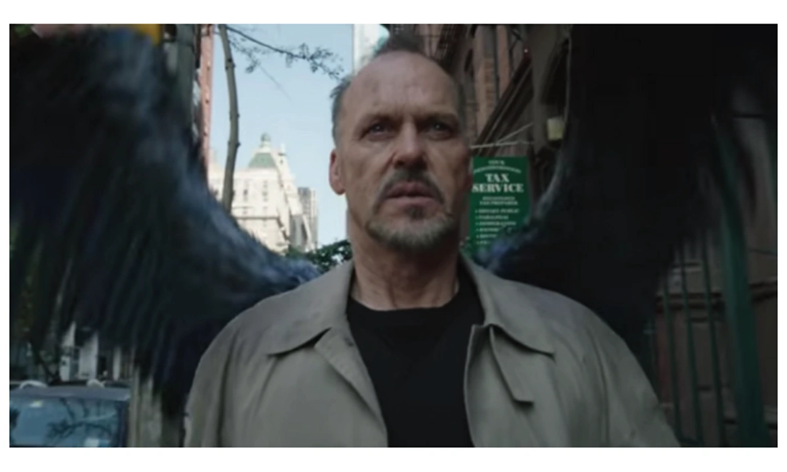
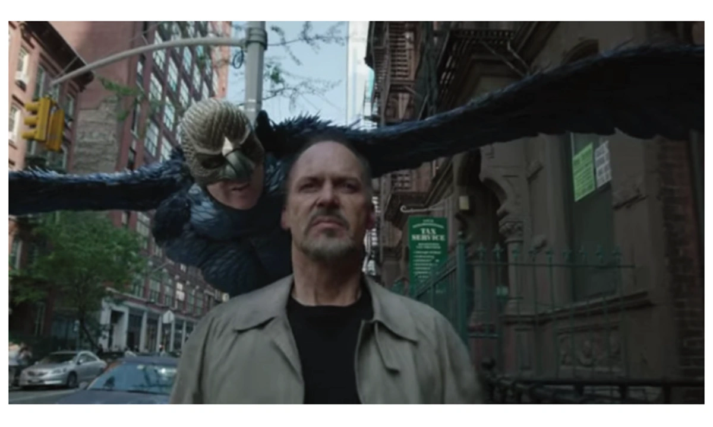
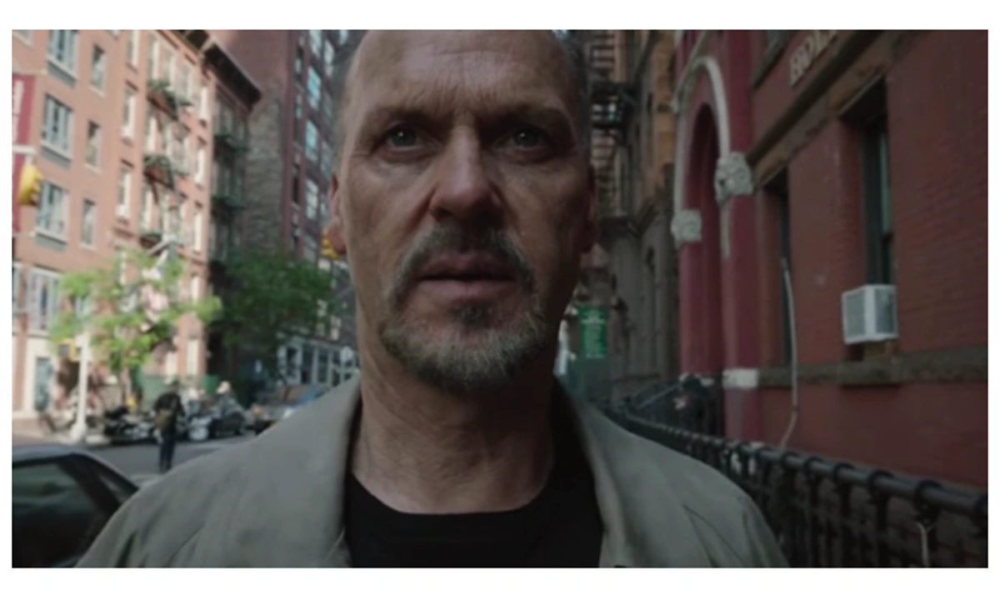
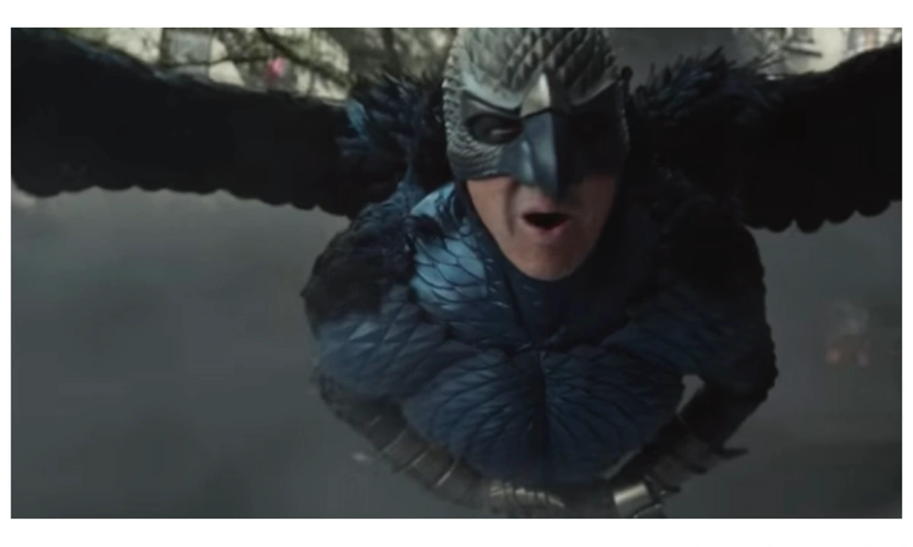
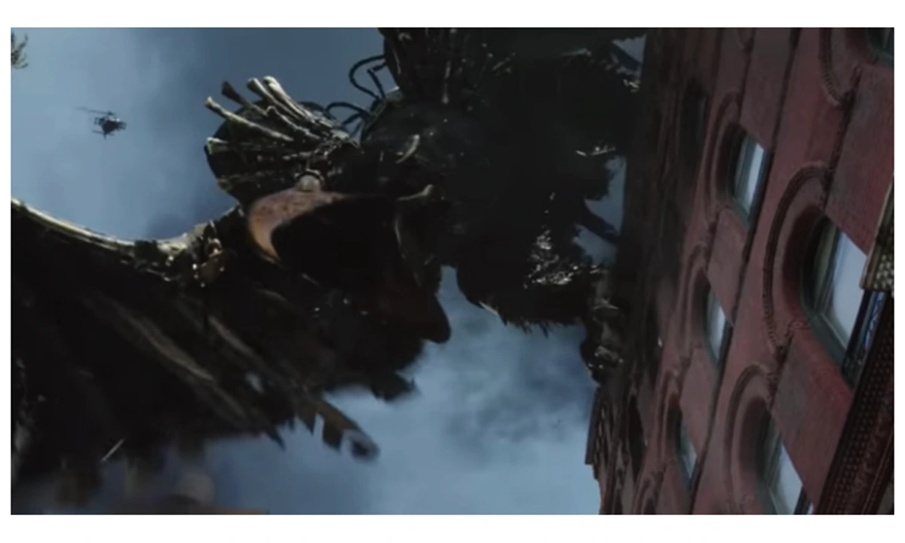
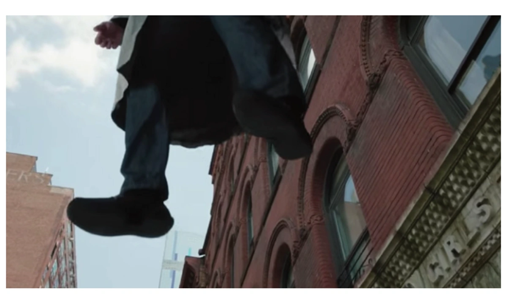
先选出有明确构图意图的重要时刻，来定义一个运动镜头。摄影机与人物虽然在移动，你仍能用关键帧固定住表达意图。先确定至少 3 个关键帧，再设计摄影机怎样运动，把观众从一帧带到下一帧。
Define a moving shot by selecting important moments composed with intention.
Though your camera and characters will be in motion throughout a moving shot, you can anchor your compositional intentions by choosing key frames.
Establish 3+ key frames, then define the movement of the camera that will transport the audience from one key frame to another.